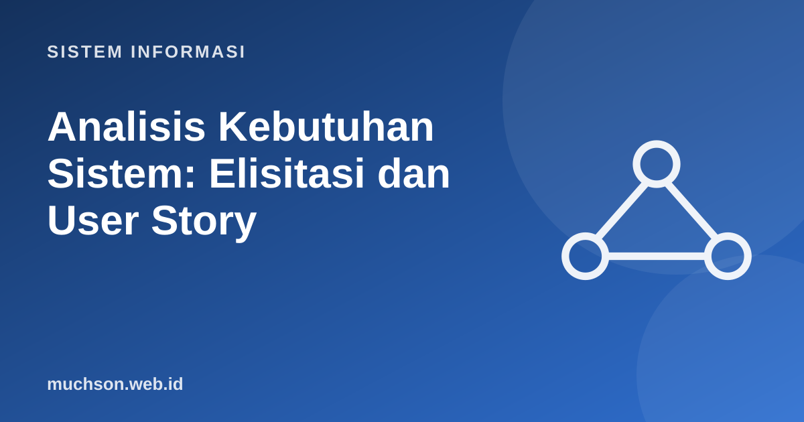

Beranda › Artikel › Sistem Informasi
Sistem InformasiAnalisis Kebutuhan Sistem: Elisitasi dan User Story
Sebagian besar proyek yang gagal tidak gagal karena kodenya buruk, melainkan karena membangun hal yang salah. Analisis kebutuhan adalah disiplin menemukan apa yang sebenarnya dibutuhkan pengguna dan menuliskannya dengan jelas sehingga dapat dibangun dan diuji.
Sebaiknya sudah paham: SDLC

Setelah membaca dan mencoba materi ini, Anda mampu:
- menggunakan teknik elisitasi: wawancara, observasi, kuesioner, studi dokumen, workshop
- membedakan kebutuhan fungsional dan non-fungsional
- menulis user story dengan kriteria penerimaan
- memprioritaskan kebutuhan dengan MoSCoW
- mengenali kebutuhan yang buruk (ambigu, tak teruji)
Teknik elisitasi
| Teknik | Kelebihan | Kelemahan | Cocok untuk |
|---|---|---|---|
| Wawancara | Mendalam, dapat menggali alasan | Memakan waktu, bias narasumber | Memahami proses dan masalah |
| Observasi | Melihat praktik sebenarnya, bukan yang dikatakan | Mengganggu, hanya yang tampak | Proses kerja nyata |
| Kuesioner | Banyak responden, murah | Dangkal, tingkat respons rendah | Preferensi dan sebaran pendapat |
| Studi dokumen | Cepat, objektif | Bisa usang atau tak lengkap | Formulir, laporan, kebijakan lama |
| Workshop/JAD | Kesepakatan cepat antar pemangku kepentingan | Perlu fasilitator, jadwal sulit | Konflik kebutuhan antar bagian |
| Prototipe | Pengguna bereaksi pada sesuatu yang nyata | Bisa dikira produk jadi | Antarmuka dan alur |
Pengguna sering mengatakan apa yang mereka kira mereka lakukan. Gabungkan wawancara dengan observasi. Ajukan pertanyaan "mengapa" lima kali untuk mencapai akar kebutuhan: pemohon yang berkata "kami butuh tombol ekspor Excel" mungkin sebenarnya butuh laporan untuk rapat yang dapat dibuat sistem sendiri.
Kebutuhan fungsional dan non-fungsional
| Kebutuhan buruk | Masalah | Perbaikan |
|---|---|---|
| Sistem harus cepat | Tak terukur | 95% permintaan halaman utama selesai < 2 detik pada 1.000 pengguna bersamaan |
| Sistem mudah digunakan | Subjektif | Pengguna baru dapat menyelesaikan KRS tanpa bantuan dalam < 10 menit (uji 10 pengguna) |
| Sistem memiliki laporan lengkap | Ambigu | Sistem menyediakan laporan nilai per kelas, per semester, dalam format PDF dan CSV |
| Sistem harus aman dan fleksibel dan murah | Beberapa kebutuhan dalam satu kalimat, bertentangan | Pisahkan dan prioritaskan |
User story dan kriteria penerimaan
Format populer dalam proyek Agile: Sebagai [peran], saya ingin [kemampuan], agar [manfaat]. Setiap cerita dilengkapi kriteria penerimaan yang menyatakan kapan cerita dianggap selesai.
Sebagai mahasiswa,
saya ingin melihat sisa kuota kelas saat memilih mata kuliah,
agar saya tidak memilih kelas yang sudah penuh.
Kriteria penerimaan:
1. Kuota dan jumlah terdaftar tampil di daftar kelas.
2. Kelas penuh ditandai dan tombol "Pilih" dinonaktifkan.
3. Angka diperbarui paling lambat 5 detik setelah ada perubahan.Cerita yang baik memenuhi kriteria INVEST: Independent (berdiri sendiri), Negotiable (dapat dinegosiasikan), Valuable (bernilai), Estimable (dapat diperkirakan), Small (kecil), Testable (dapat diuji).
Memprioritaskan: MoSCoW
| Kategori | Arti | Contoh sistem KRS |
|---|---|---|
| Must have | Tanpa ini sistem tidak berguna | Memilih mata kuliah, cek bentrok jadwal |
| Should have | Penting tetapi ada jalan lain sementara | Persetujuan dosen wali online |
| Could have | Diinginkan jika waktu dan anggaran ada | Rekomendasi mata kuliah berdasarkan riwayat |
| Won't have (kali ini) | Disepakati tidak dikerjakan sekarang | Aplikasi seluler asli (cukup web responsif) |
1. Ubah kebutuhan "sistem harus user friendly" menjadi kebutuhan terukur.
2. Tulis user story dengan kriteria penerimaan untuk fitur "reset kata sandi".
3. Sebutkan tiga pemangku kepentingan sistem perpustakaan kampus dan satu kepentingan masing-masing.
4. Mengapa kebutuhan harus dapat diuji?
- Gali kebutuhan dengan beberapa teknik: wawancara, observasi, kuesioner, dokumen, workshop, prototipe.
- Bedakan kebutuhan fungsional (apa) dan non-fungsional (seberapa baik).
- Tulis kebutuhan yang terukur dan dapat diuji.
- User story + kriteria penerimaan; prioritaskan dengan MoSCoW.
Tanya jawab
Apa bedanya kebutuhan dan solusi?
Bagaimana menghadapi perubahan kebutuhan?
Siapa yang menulis kebutuhan?
Referensi
- Kenneth E. Kendall dan Julie E. Kendall, Systems Analysis and Design (Pearson)
- Ian Sommerville, Software Engineering (Pearson)
- Mike Cohn, User Stories Applied (Addison-Wesley, 2004)
- IEEE/ISO/IEC 29148: Requirements engineering